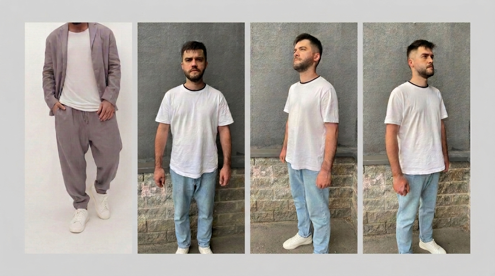
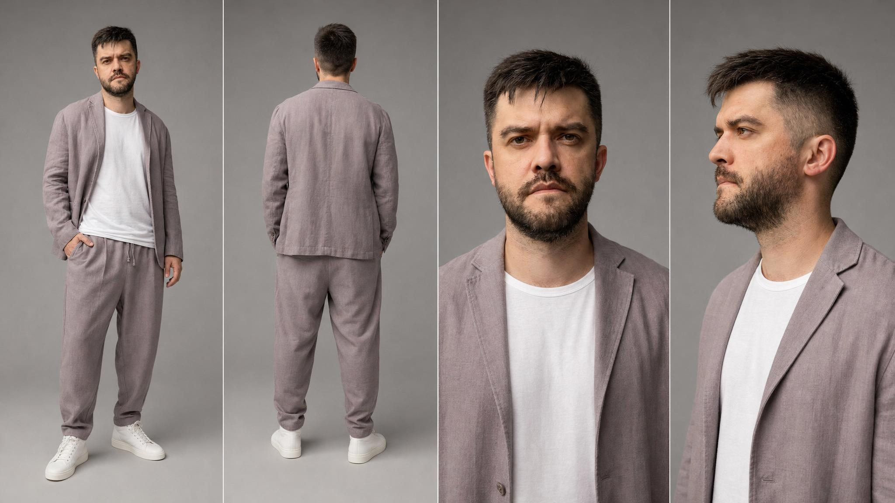
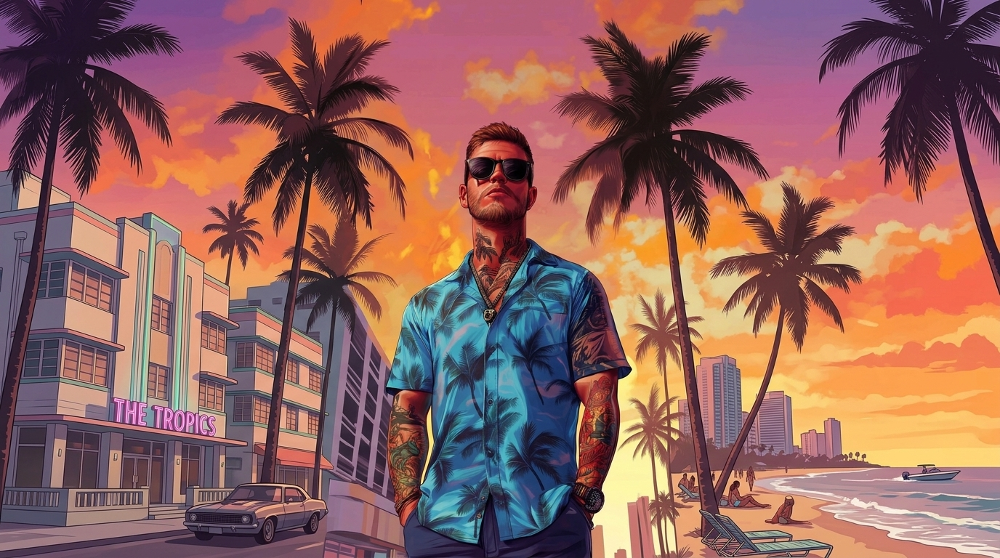
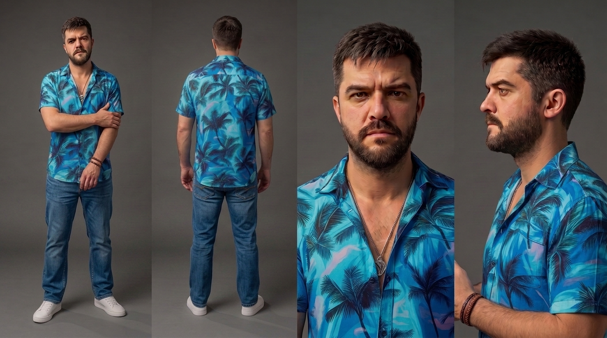
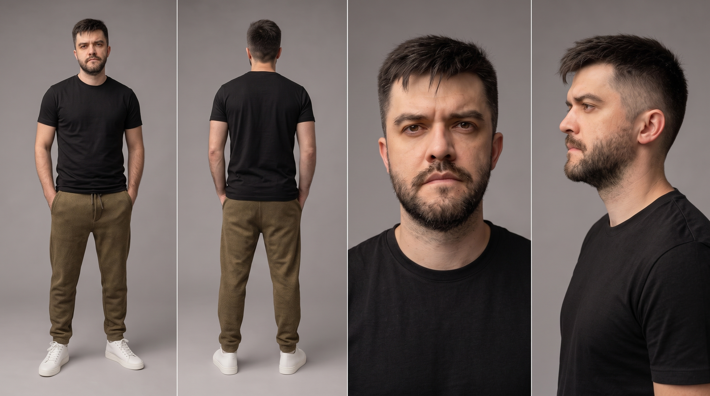
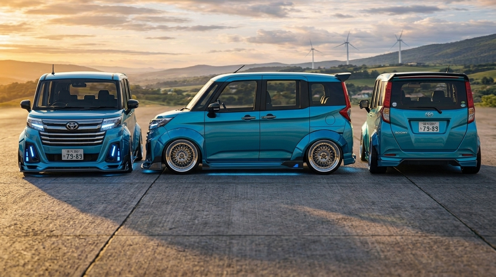

Как я снял рекламный ролик с помощью нейросетей: погоня в стиле GTA и кофемашина KRUPS
Полный разбор производственного процесса: от спонтанной идеи до финальной заставки — без съёмочной группы, актёров и огромного бюджета на продакшн
Инструменты проекта
Этап 1. Рождение сюжета
Идея возникла спонтанно. Изначально стояла задача снять промо-ролик с продукцией, которую мы продаём на наших сайтах. В голове крутились стандартные варианты: тостер на кухне, электрогриль в действии, пылесос на ковре. Всё это было предсказуемо и, честно говоря, скучно.
Хотелось больше креатива, и пришла идея поместить в ролик себя — тем более что нейросети за последний год совершили колоссальный прорыв именно в направлении генерации видео с реальными людьми.
В итоге главным объектом ролика стала кофемашина KRUPS, а главным героем — я сам. Когда герой и объект были определены, оставалось придумать сюжет. Так родилась концепция из двух актов:
- Акт 1. Главный герой существует в мире GTA: похищает кофемашину из сейфа, уходит от погони на стилизованном автомобиле — и в итоге терпит поражение, как это часто бывает в финале неудачной миссии.
- Акт 2. Всё произошедшее оказывается кошмарным сном. Герой просыпается на диване, идёт на кухню и спокойно заваривает кофе в той самой кофемашине. Финал — брендовая заставка KRUPS.
Этап 2. Подготовка визуальных материалов
Карточка персонажа: зачем она нужна
Для собственного участия в ролике мне потребовалась так называемая карточка персонажа (character reference sheet). Для нейросети Seedance это своеобразный лайфхак: карточка помогает модели удерживать внешность персонажа стабильной на протяжении всего видео, не теряя его образ от кадра к кадру.
Как создать карточку персонажа: пошаговая инструкция
- Сфотографировать себя с разных ракурсов: спереди, сзади, с обоих боков.
- Найти референсы в Pinterest: образ персонажа из лора GTA, кофемашина, интерьер кухни-гостиной, автомобиль главного героя и т.д.
- Обратиться к Nano Banana 2: объединить собственные фотографии в карточку из 4 ракурсов на одном полотне — без изменения внешности.
- На основе карточки создать новую — уже в образе лора игры, сформировав промт через Nano Banana 2.
Собираем просто приличную карточку
Для начала нам понадобятся несколько собственных фотографий и исходный референс персонажа.
Что на фоне наших изображений и во что мы одеты — нас не сильно волнует, Nano Banana 2 всё исправит.
Главное, чтобы чётко прослеживались черты лица и присутствовало хорошее дневное освещение. Идеально подойдут фото у окна или на улице — равномерный свет поможет нейросети точнее считать детали вашей внешности.

Промт для карточки персонажа
Сам промт самому писать не нужно, за нас все сделает Claude на основе описания внешности и желаемого стиля.
Show the same man from the attached reference photos (photo 1, photo 2, photo 3), now wearing the outfit shown in the reference image (photo 4). Character reference sheet — four views on a neutral mid-grey studio background: [VIEW 1 — FULL BODY, FRONT] Full-body three-quarter front view, entire figure visible head to toe; relaxed, confident posture, one hand in the trouser pocket, the other hanging freely; blazer open, white T-shirt visible. [VIEW 2 — FULL BODY, REAR] Full-body, directly from behind. Entire figure visible head to toe; the back of the relaxed blazer with soft shoulders and slightly bunched sleeves at the wrists; wide trousers with a drawstring waist and soft front pleats; clean white sneakers. [VIEW 3 — FRONT CLOSE-UP] Head and shoulders, straight-on close-up. Sharp detail on skin texture, light stubble/short beard, groomed brows; short dark chestnut haircut with light texture; calm, confident gaze. In frame — blazer lapels and the round neckline of the white T-shirt. [VIEW 4 — PROFILE CLOSE-UP] Head and shoulders, left profile at a 90-degree angle. Defined nose profile, beard and temple line, ear shape; visible blazer lapel and shoulder, fabric texture. CHARACTER DESCRIPTION: Man approximately 30–35 years old. Fair skin with a natural healthy tone, clean texture; direct, calm gaze; medium-density brows with a natural arch; medium-full lips, neutral confident expression with a hint of focus. Short dark chestnut haircut, neatly trimmed temples; well-groomed short beard and mustache. HAIR & GROOMING: Short, clean-cut hairstyle with natural texture, light matte finish without shine; beard kept to a uniform length with neatly lined neck and cheeks. OUTFIT (as in the reference image): • Blazer with a relaxed fit in a warm grey-taupe tone, soft shoulders, single-breasted, worn open in frame; light drape, optionally raw edges along the fronts; fabric — soft viscose/linen blend (visible pliability and matte texture). • Matching trousers, relaxed, high-rise with a white drawstring, soft front pleats, slightly tapered at the ankle, length to the top of the shoes. • Basic white T-shirt, dense cotton jersey, crew neck, relaxed fit. • Footwear — clean white minimalist high-top sneakers with a smooth upper and thick sole. ACCESSORIES: No jewelry or accessories; clean short nails. GROOM: Natural, slightly matte skin with no noticeable makeup; neatly styled beard; hair smoothed without excess shine. LIGHTING & PRESENTATION: Clean studio lighting — soft key from upper left, gentle fill from the right. Consistent character identity, facial proportions, haircut length and shape, beard line, and costume details across all four views. No text, no watermarks, no extra figures, no background environment. STYLE: Cinematic photorealism; character concept art presentation; sharp focus across all views, shallow depth of field only on the background. Contemporary minimalist aesthetic, soft natural tones, high-end editorial mood, ultra-sharp details, 8K quality.

Переодеваем персонажа в стиль GTA Vice City
В процессе работы возникла идея сделать персонажа более узнаваемым, взяв за основу эстетику GTA Vice City. Для этого достаточно простого промта на русском языке:
Используй карточку персонажа с первого изображения как основу. Одень персонажа в рубашку с референсного изображения (второе фото) — сохрани точный дизайн, цвет и детали рубашки. Добавь персонажу узкие синие джинсы. Визуальный стиль оформления должен соответствовать эстетике игры GTA — яркие цвета, городская атмосфера, детализированный арт в стиле криминального экшена с характерной графикой GTA.



Остальные карточки проекта
По той же схеме создаются все визуальные элементы проекта. Для каждого ищем референсы в Pinterest и передаём их в Nano Banana 2 вместе с описанием нужного стиля.



Этап 3. Генерация видео в Seedance 2.0
Структура промта для Seedance
Промты для